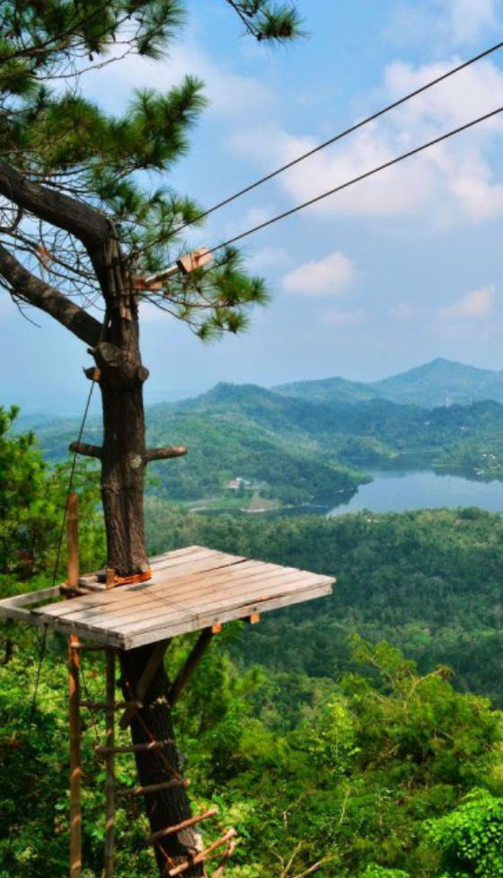

7 Rekomendasi Spot Foto Kekinian yang Kece dan Instagramable di Jogja
Selain dikenal sebagai kota pelajar, Kota Yogyakarta juga kerap dijadikan tempat wisata karena banyaknya objek wisata yang murah meriah. Kalau kamu ke Jogja, gak afdol rasanya kalau gak berkunjung ke berbagai tempat wisata dan berburu foto yang instagramable.
Nah, buat kamu yang sekarang lagi ada di Yogyakarta atau sedang merencanakan liburan ke Jogja. Berikut ada 7 rekomendasi spot foto kekinian yang kece dan instagramable.
1. The World Landmarks Merapi Park
The World Landmarks Merapi Park berlokasi di Jl. Kaliurang Km 22.5, Hargobinangun, Sleman. Walaupun masih tergolong baru, tempat wisata ini mampu menarik minat banyak pengunjung. Menghadirkan konsep bangunan terkenal di seluruh dunia, objek wisata ini cocok untuk kamu yang hobi fotografi dan suka cari spot foto yang instagramable.
2. Rumah Hobbit Jogja
Kalau kamu suka nonton film Lord of The Ring dan The Hobbit, kamu pasti tahu rumah para Hobbit yang desainnya super lucu dan imut. Kamu gak perlu ke New Zealand kalau mau foto di spot kece ini, karena di Jogja ada duplikat rumah Hobbit yang mirip banget sama aslinya. Rumah Hobbit ini terletak di Jl. Hutan Pinus Nganjir, Sukorame, Mangunan, Dlingo, Bantul.
3. Kebun Teh Dlingo
Kalau kamu suka objek wisata yang menyatu dengan alam. Kebun Teh Dlingo bisa jadi tempat yang pas. Menyuguhkan pemandangan alam yang indah dan suasana yang sejuk. Tempat ini bisa jadi spot foto yang kece dan instagramable.
Karena wisatawan yang dominan berasal dari mancanegara, gak heran Kebun Teh Dlingo menyediakan fasilitas yang cukup lengkap. Kalau kamu berminat, Kebun Teh Dlingo ini berlokasi di Dlingo Barat, Pagerharjo, Samigaluh, Kulon Progo, D.I. Yogyakarta
4. Tebing Breksi
Spot foto kece di Jogja selanjutnya ada Tebing Breksi. Berlokasi di Desa Sambirejo, Prambanan, Sleman, Yogyakarta. Kamu bisa mendapatkan foto kece berlatarkan tebing dengan ukiran indah yang instagramable.
5. Hutan Mangrove Kulon Progo
Tempat wisata ini merupakan suatu kawasan bakau yang sengaja dikelola oleh warga sekitar. Berbagai aksen dan spot foto keren ditambahkan oleh warga untuk menarik minat wisatawan agar betah berkunjung di tempat ini. Kawasan wisata Hutan Mangrove Kulon Progo ini terletak di Dusun Pasir Mendit, Jangkaran, Temon, Kulon Progo.
6. Kalibiru

Kalau kamu mencari spot foto dengan nuansa pedesaan kecil yang indah, Kalibiru jadi tempat yang tepat. Terletak di Desa Hargowilis, Kokap, Kulonprogo. Kamu bisa menikmati indahnya desa dengan suasana yang asri sambil mengagumi indahnya langit dan pemandangan sekitar dari atas pepohonan pinus. Kalau mau lebih asyik lagi, kamu bisa datang waktu pagi atau sore sambil menantikan sunrise dan sunset.
7. Teras Kaca Pantai Nguluran
Dengan latar pantai yang jernih, angin sepoi-sepoi, serta spot foto yang sengaja dibuat sedemikian rupa. Teras Kaca Pantai Nguluran bisa jadi tempat hunting foto yang instagramable ala-ala kapal pesiar.
Terletak di Girikarto, Panggang, Gunung Kidul, Teras Kaca jadi tempat favorit anak muda buat hunting foto kece. Kalau kamu berminat foto di sini, kamu harus bersabar karena banyak sekali orang yang pengen berfoto di sini, sehingga antreannya pun cukup lama.
Itu tadi beberapa rekomendasi spot foto paling kece yang ada di Yogyakarta. Kalau kamu berwisata dan hunting foto di mana pun, jangan lupa untuk selalu menjaga kebersihan dan keindahan tempat yang kamu kunjungi.